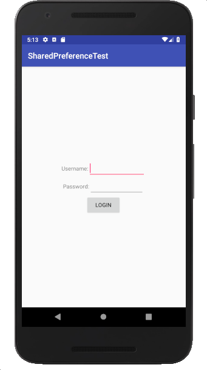

SharedPreferences 객체를 얻는 2 가지 방법
public SharedPreferences getPreferences (int mode)
SharedPreferences sharedPref = getActivity().getPreferences(Context.MODE_PRIVATE);
<?xml version="1.0" encoding="utf-8"?>
<LinearLayout xmlns:android="http://schemas.android.com/apk/res/android"
xmlns:tools="http://schemas.android.com/tools"
android:id="@+id/activity_main"
android:layout_width="match_parent"
android:layout_height="match_parent"
android:orientation="vertical"
android:gravity="center"
tools:context="com.example.kwanwoo.sharedpreferencetest.MainActivity">
<LinearLayout
android:layout_width="match_parent"
android:layout_height="wrap_content"
android:orientation="horizontal"
android:weightSum="1"
android:gravity="center">
<TextView
android:layout_width="wrap_content"
android:layout_height="wrap_content"
android:text="Username:"/>
<EditText
android:layout_width="wrap_content"
android:layout_height="wrap_content"
android:id="@+id/textInput1"
android:layout_weight="0.38" />
</LinearLayout>
<LinearLayout
android:layout_width="match_parent"
android:layout_height="wrap_content"
android:orientation="horizontal"
android:gravity="center">
<TextView
android:layout_width="wrap_content"
android:layout_height="wrap_content"
android:text="Password:"/>
<EditText
android:layout_width="137dp"
android:layout_height="wrap_content"
android:inputType="textPassword"
android:id="@+id/textInput2"
/>
</LinearLayout>
<Button
android:layout_width="wrap_content"
android:layout_height="wrap_content"
android:layout_gravity="center_horizontal"
android:text="Login"
android:id="@+id/button1"/>
</LinearLayout>public class MainActivity extends AppCompatActivity {
* public static final String PREFERENCES_GROUP = "LoginInfo";
public static final String PREFERENCES_ATTR1 = "Username";
... 생략 ...
SharedPreferences setting;
public void onCreate(Bundle savedInstanceState) {
super.onCreate(savedInstanceState);
setContentView(R.layout.activity_main);
// SharedPreferences 객체 얻기
* setting = getSharedPreferences(PREFERENCES_GROUP, MODE_PRIVATE);
final EditText textInput1 = (EditText) findViewById(R.id.textInput1);
... 생략 ...
* textInput1.setText(retrieveName());
... 생략 ...
Button btn = (Button) findViewById(R.id.button1);
btn.setOnClickListener(new View.OnClickListener() {
public void onClick(View v) {
String name = textInput1.getText().toString();
* saveName(name);
... 생략 ...
}
});
}
private String retrieveName() {
String nameText = "";
// SharedPreferences 객체에서 PREFERENCES_ATTR1 이름으로 저장된 값을 얻기
* if (setting.contains(PREFERENCES_ATTR1)) {
* nameText = setting.getString(PREFERENCES_ATTR1, "");
}
return nameText;
}
private void saveName(String text) {
// SharedPreferences 객체에 PREFERENCES_ATTR1 이름으로 text 문자열 값을 저장하기
* SharedPreferences.Editor editor = setting.edit();
* editor.putString(PREFERENCES_ATTR1, text);
* editor.commit();
}
... 생략 ...
}